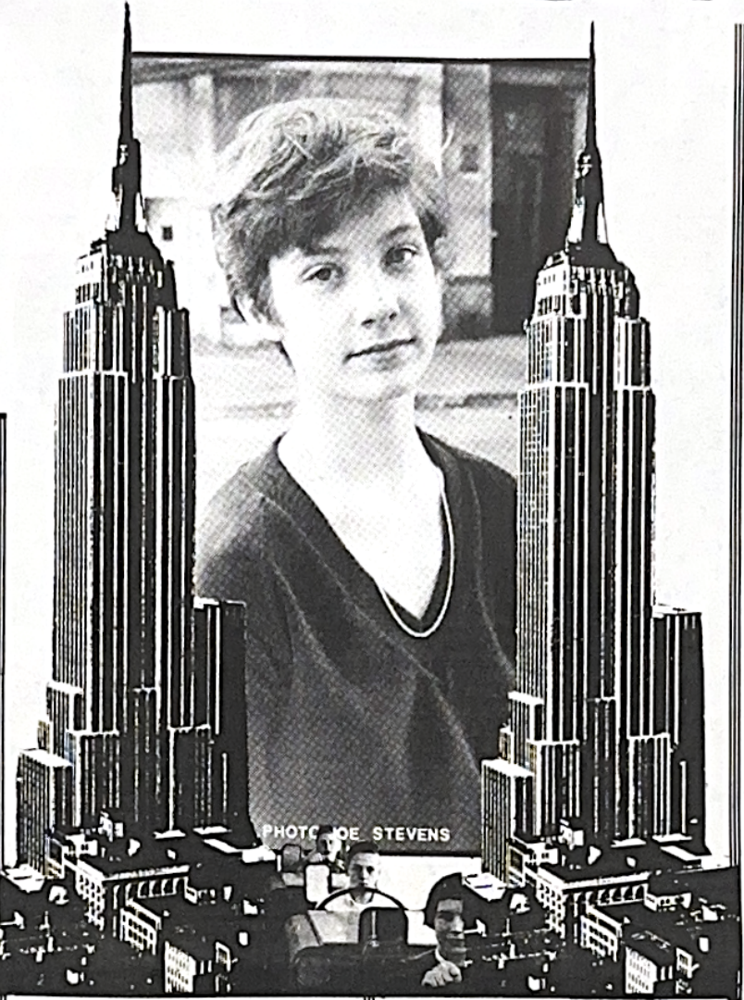

I wanted to interview Laura after hearing Student Teachers at CBGB's, and being impressed with her drumming. Laura is a stand-out destined to make a name for herself. The interview was conducted at an apartment in Manhattan which Laura shares with Jimmy "The Housepainter Destri". We talked in the living room/bedroom, amid a ringing telephone and Laura's sister. The one window on the room had a teriffic view of the city.......
SS

S:How long have you been playing drums?
L:A year.
S:That's all?
L:Year, only a year. I took lessons for about four or five months and then I stopped. We started playing alot more, having alot of gigs. It takes money, so I never got around to picking up lessons again.
So I took them for a few months, then just played along by myself, and watched other drummers, and picked up tips from friends of mine. I still have alot to learn.
S:How old are you?
L:17. We're a very young band.
S:I could tell.
L:I just turned 17 in December.
S:Were you instrumental in forming the band?
L:Yeah, well sort of. It all started with my keyboard player, Bill, my bass player and myslef who had a band at one time. But it was just an idea. I didn't play drums at the time, and she hadn't played bass, but we liked the idea of getting a band together..We talked about it for about a year..Then my keyboard player became very good friends with the singer, David. David said he had this guitarist friend, and brought him along. We had a photo session even before we rehearsed, 'cause we all liked the way the other looked.
S:What's the name of your guitarist?
L:Phillip Shelley. We had this photo session...We knew nothing! We were just forming this band. Nobody knew what they wanted to do. We finally got our first rehearsal together. Slowly things started getting along, and we played our first gig at my high school.
S:Which one?
L:It's Friend's Seminary on E. 16th..It's a private H.S. A joke, but we played a concert just to get the feel of playing in front of people. Our friends The Blessed came to see us...They liked us, and were playing the next Sunday at Max's and said: "Why don't you open for us?"
So we went to Max's (we knew the booking agent), and said:"Why don'cha let us do this?" She said fine. We didn't get billed or anything. It was like an audition for the club. They really liked us so we got another gig there a couple of weeks later. It started like that.
It was slow at first at the beginning, but then we found ouselves playing three or four gigs a month. Things started going very fast.
Then we had a gig at Max's. Bill came up and said, Jimmy Destri wants to take us into the studio. What do you think?" I said sure. We were all really excited. He came to lots of rehearsals and went over the songs, & we recorded in the middle of last July. Recorded our single, which isn't out yet,but should be soon.
S:What songs?
L:"Christmas Weather" and "The Quake"
S:"The Quake" seems to be a popular song.
L:Yeah, that's the one Bill and I write. The major songwriters are Bill & Phillip, which is strange, 'cause they write in completely different ways
S:Was that your drumkit you used at CB's?
L:No. It was Jane's of the Erasers. It is an incredible drum kit. A vintage Pearl.
S:It was miked well.
JD:Thank you.
S:Yeah, my friend really liked the...